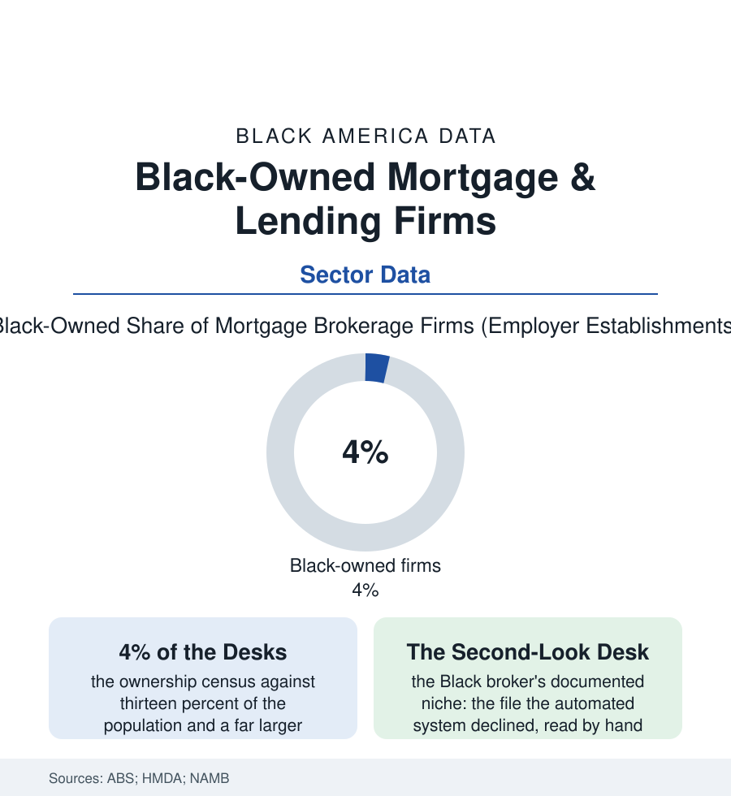

Black Business
The Lender's Side of the Desk: Black-Owned Mortgage and Lending Businesses
Every denial-gap article has a mirror image: the Black-owned brokerages and lenders built to work the desk from the other side. The lending file.

Every article in this atlas about a denied loan implies a desk where the decision was made. This one is about the other desk: the Black-owned mortgage brokerages, correspondent lenders, and community lenders built to sit on the applicant's side of it. They are few — the business census counts Black ownership in the low single digits of the mortgage-brokerage industry — and their existence is a data point about every gap upstream. This article reads the lending file.
Small Shelf, Specific Gravity
The sector's structure explains its scale: the mortgage business's modern form (the warehouse lines, the agency approvals, the capital calls of the rate cycles) runs on credit facilities that the financing file's disparities ration precisely where Black firms stand — the independent mortgage bank's birth certificate being, in the licensing data, a net-worth requirement and a warehouse line that together screen the undercapitalized out before the first loan. What exists, then, is concentrated in the brokerage form (the licensed shop originating for wholesale lenders — lower capital, higher hustle, the model of the apparel file's jobbers translated to finance) and in the mission shelf: the minority depositories and CDFI lenders of the banks article, the community loan funds, the Black-led fintech originators of the investing file attacking the desk's software. The workforce data locate the human bridge: Black loan officers at under a tenth of the industry's originators in the licensing counts — against the evidence, from the HMDA-matched studies, that representation is not decoration (the borrowers of the denial-gap file faring measurably differently with an originator who reads their file's vernacular: the self-employment income documented instead of discounted, the family gift lettered instead of doubted, the thin-file applicant coached to the credit file's repair before the application rather than denied out of it — the second-look desk as the product, its conversion rates the firms' own unadvertised statistic). The trust economy runs both ways down the desk: the churches' and fraternities' referral circuits — the faith file's networks again — feeding the Black broker the clientele the mainstream's marketing never addressed, the broker's closing table returning the referrals' faith in kind.
The shelf has ancestors: the Black mortgage and realty firms of the mid-century Northern cities — the brokers who, barred from the mainstream's desks, became the market-makers of the contract era, a chapter the housing histories record with the ambivalence it earned (some firms sheltering their communities' buyers as best the rigged market allowed, others profiting from the rigging itself) — and the FHA-era pioneers who fought onto the approved-lender lists as the federal mortgage state was built. The modern broker inherits both halves of that record: the trust of the community that watched its own be shut out, and the duty, legible in every honest firm's practice, to be the desk the ancestors' customers deserved.
The Cycle and the Counterweight
The sector's cyclicality is its documented vulnerability: the refinance booms mint the firms (the 2020–21 volume minting Black brokerages at a record pace in the licensing data, the purchase-market turn that followed closing them at a sadder one — the industry's small-firm mortality concentrating, as the financing data predict, on the thinnest-capitalized, which the ownership tables say plainly), so that each cycle's net Black capacity ends nearer where it began than the boom promised. The policy file's counterweights are accordingly structural: the special-purpose credit programs the banks article tracks (underwriting to the neighborhood's actual file — the products the Black broker is positioned to deliver first and explain best), the down-payment-assistance ecosystems (the broker as their retail interface, the assistance files stacked at her desk), the homebuyer-education pipelines run with the housing counselors of the nonprofit shelf. The file's closing argument is arithmetic: the denial gap's stubborn points are, in part, a documentation and advocacy gap wearing a rate sheet's clothing — and advocacy, unlike capital, can be hired at the neighborhood scale. A four-percent shelf of desks cannot re-underwrite a nation. It can, loan by loan and second look by second look, demonstrate what the desk looks like when the person across it starts from belief — and the HMDA tapes, which record every application's fate without recording the effort behind it, will show the results long before they show the reason.
Reading the Lending Data
The lender's side of the desk is the business section's answer to its own housing file: the gap is not only in the applicants' numbers but in the chairs across from them. The census counts the firms. The closing tables of the community — the keys handed over after the second look — keep the count that matters.
More in Black Business
Black-Owned Businesses: Counts, Receipts, and the Representation Gap
About 161,000 Black-owned employer firms and three million solo ventures: how the Census Bureau counts Black business ownership, where firms concentrate, and the gap between population share and business share.
Black Median Net Worth: The Wealth Gap in Federal Reserve Data
The Federal Reserve puts Black median family net worth at $44,900, against $285,000 for White families — about 16 cents on the dollar. The widest gap in economic data.
Black Buying Power: The $1.8 Trillion Consumer Economy
Black buying power is estimated at about $1.8 trillion — larger than the economy of most nations. What the figure measures, who produces it, and what it buys.
Source: U.S. Census Bureau Annual Business Survey; Home Mortgage Disclosure Act data; National Association of Mortgage Brokers; Urban Institute lending research.